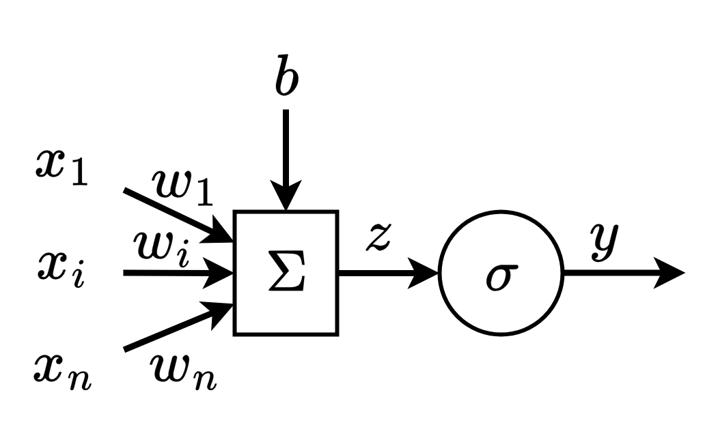
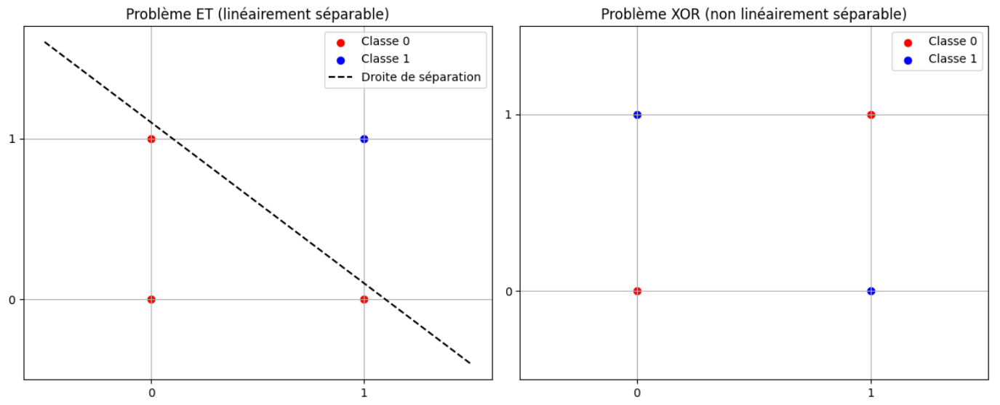

Chapitre 2 — Perceptron multi-couches
🎯 Objectifs du Chapitre
À la fin de cette section, vous saurez :
- Le fonctionnement du perceptron simple.
- Utiliser une fonction d'activation adaptée.
- L’importance de la normalisation / standardisation des données et l'usage des epochs.
- Construire un réseau de neurones avec
torch.nn. - Faire un entraînement simple d’un MLP pour un problème de régression.
- Suivre l’évolution de la loss et interpréter les résultats.
- Utiliser
torch-summarypour inspecter l’architecture du réseau.
📖 1. Rappels sur les perceptrons
Le perceptron multi-couches (MLP de Multi-Layers Perceptron en anglais) est la brique de base des réseaux de neurones modernes. Dans ce chapitre, nous allons l’appliquer à des problèmes de régression simple. Avant de commencer, voici quelques rappels.
1.1. Perceptron simple
Le perceptron est le bloc de base d’un réseau de neurones. Il réalise une transformation linéaire suivie (ou pas) d’une fonction d’activation telle que :
$$y = \sigma(Wx + b)$$où :
- \(y\) est la sortie du perceptron,
- \(\sigma\) est une fonction d’activation,
- \(W\) est la matrice des poids,
- \(b\) est le biais et
- \(x\) est l'ensemble des entrées du perceptron.
1.2. Perceptron intuition
avec \(y= \sigma(x_1*w_1 + x_2*w_2 + ...+ x_i*w_i + ... + x_n*w_n + b)\)
💡 Intuition :
- Chaque poids \(w_i\) mesure l’importance de la caractéristique \(x_i\).
- Le biais \(b\) déplace la frontière de décision.
- La fonction d’activation permet d’introduire de la non-linéarité, indispensable pour modéliser des relations complexes mais nous en parleront plus en détails par la suite.
1.3. Mise à jour des paramètres
Un perceptron possède deux types de paramètres : les poids et le biais.
Lors de l’entraînement, on souhaite ajuster ces paramètres pour améliorer les prédictions du modèle. Pour cela, il faut mettre à jour les poids après avoir calculé la loss grâce à la fonction de perte et le gradient grâce à l'optimiseur comme expliqué dans le chapitre précédent.
Pour rappel, on met à jours les paramètres du modèle grâce à l'équation introduite dans le chapitre précédent.
$$\theta \leftarrow \theta - \eta \, \nabla_\theta \mathcal{L}(\theta)$$où :
- \(\theta\) représente l’ensemble des paramètres du modèle (ici \(W\) et \(b\)),
- \(\mathcal{L}\) est la fonction de perte,
- \(\nabla_\theta \mathcal{L}\) est le gradient de la perte par rapport aux paramètres,
- \(\eta\) est le taux d’apprentissage (learning rate en anglais).
1.4. Exemples d'applications du perceptron simple
Un perceptron simple ne peut résoudre que les problèmes linéairement séparables puisque en trouvant les paramètres du modèle, le perceptron trace une droite dans le plan des entrées et sépare les points selon qu’ils sont au-dessus ou en dessous de cette droite.
Exemple 1 : porte logique ET
| x₁ | x₂ | y=ET |
|---|---|---|
| 0 | 0 | 0 |
| 0 | 1 | 0 |
| 1 | 0 | 0 |
| 1 | 1 | 1 |
Dans ce cas, une droite sépare bien les deux classes :
- la classe \(0\) (points en bas à gauche, en haut à gauche, en bas à droite),
- la classe \(1\) (point en haut à droite).
Un perceptron simple peut donc apprendre cette fonction.
Exemple 2 : porte logique XOR
| x₁ | x₂ | y=XOR |
|---|---|---|
| 0 | 0 | 0 |
| 0 | 1 | 1 |
| 1 | 0 | 1 |
| 1 | 1 | 0 |
Ici, il est impossible de tracer une seule droite qui sépare correctement les classes. Autrement dit, XOR n’est pas linéairement séparable.
Conclusion :
- Le perceptron simple suffit pour des tâches linéaires (comme ET, OU).
- Pour résoudre des problèmes plus complexes comme XOR, il faut introduire plusieurs couches de neurones et des fonctions d’activation non-linéaires : c’est le principe du perceptron multi-couches (MLP).
1.5. Faire un perceptron dans PyTorch
Pour créer un perceptron simple dans PyTorch, on peut utiliser la fonction Linear de torch.nn, qui implémente une couche linéaire (ou affine) : \(y = Wx + b\). La fonction Linear prend en entrée le nombre d'entrée \(x\) et le nombre de sortie \(y\).
import torch
import torch.nn as nn
# Données ET
X = torch.tensor([[0,0],[0,1],[1,0],[1,1]], dtype=torch.float32)
y = torch.tensor([[0],[0],[0],[1]], dtype=torch.float32)
# Modèle linéaire (perceptron)
model = nn.Linear(2, 1, bias=True)
# Loss function et optimiseur
loss_fc = nn.MSELoss()
optimizer = torch.optim.SGD(model.parameters(), lr=0.1)
# Entraînement
for _ in range(500):
optimizer.zero_grad()
loss = loss_fc(model(X), y)
loss.backward()
optimizer.step()
# Résultat
with torch.no_grad():
print((model(X)).round())
print(model.weight, model.bias)Remarque : si maintenant on change les entrées et sorties pour le XOR, le modèle ne pourra pas apprendre correctement la fonction (les \(W\) restent à 0 comme à l'initialisation). Vous pouvez faire le test pour vérifier.
📖 2. Fonction d'activation
Les fonctions d’activation introduisent de la non-linéarité dans le modèle, ce qui permet de mieux capturer des relations complexes dans les données. Sans une fonction d'activation, un perceptron (ou même plusieurs formant un réseau de neurones de plusieurs couches) ne ferait que des combinaisons linéaires et ne pourrait pas résoudre des problèmes non linéaires comme XOR.
2.1. Équations des fonctions d'activation
Voici quatres fonctions d’activation couramment utilisées :
- Sigmoïde : \(\sigma(x) = \frac{1}{1 + e^{-x}}\)
- Sortie comprise entre 0 et 1.
- Utilisée pour les problèmes de classification binaire.
- Tanh : \(\tanh(x) = \frac{e^x - e^{-x}}{e^x + e^{-x}}\)
- Sortie comprise entre -1 et 1.
- Souvent utilisée dans les couches cachées des réseaux de neurones.
- ReLU (de Rectified Linear Unit en anglais) : \(\text{ReLU}(x) = \max(0, x)\)
- Sortie nulle pour les entrées négatives.
- La plus utilisée dans les réseaux de neurones profonds en raison de sa simplicité et de son efficacité.
- Softmax : \(\text{Softmax}(x_i) = \frac{e^{x_i}}{\sum_{j} e^{x_j}}\)
- Transforme un vecteur en une distribution de probabilité (chaque sortie est comprise entre 0 et 1 et la somme vaut 1).
- Utilisée en sortie des modèles de classification multi-classes.

2.3. Les fonctions d'activation dans PyTorch
Dans PyTorch, les fonctions d'activation sont disponibles dans la bibliothèque `torch.nn`. Voici quelques exemples :
- Sigmoïde :
nn.sigmoid(x) - Tanh :
nn.tanh(x) - ReLU :
nn.relu(x) - Softmax :
nn.softmax(x, dim=1)
2.4. Rôle de la fonction d’activation
Reprenons le problème ET avec un perceptron.
- Sans fonction d’activation : Le perceptron calcule une combinaison linéaire des entrées : \( z = w_1 x_1 + w_2 x_2 + b \). La sortie est un nombre réel, positif ou négatif. Pour classer les données, on fixe un seuil arbitraire (par exemple : si \(z > 0\) alors classe 1, sinon 0). La frontière de décision reste linéaire.
- Avec une fonction d'activation (la fonction sigmoïde par exemple) : On applique une transformation non linéaire : \(\hat{y} = \sigma(z) = \frac{1}{1 + e^{-z}}\). La sortie est toujours comprise entre 0 et 1. On peut alors l’interpréter comme une probabilité qui mesure la confiance du modèle dans sa prédiction : proche de 0 → classe 0 et proche de 1 → classe 1. Le seuil devient naturel : 0.5.
Remarque : Dans le cas où le problème à résoudre est non linéairement séparable (comme XOR), une fonction d’activation seule ne suffit pas. Il faut empiler plusieurs couches de neurones avec des fonctions d’activation entre chaque couche pour capturer la complexité des données.
2.5. Exemple d'utilisation des fonctions d'activation
Voici un exemple d'utilisation des fonctions d'activation pour le problème ET avec un perceptron :
import torch
import torch.nn as nn
# Données ET
X = torch.tensor([[0,0],[0,1],[1,0],[1,1]], dtype=torch.float32)
y = torch.tensor([[0],[0],[0],[1]], dtype=torch.float32)
# --- Cas 1 : Perceptron sans activation ---
linear = nn.Linear(2, 1, bias=True)
with torch.no_grad():
linear.weight[:] = torch.tensor([[1., 1.]]) # w1=1, w2=1
linear.bias[:] = torch.tensor([-1.5]) # b=-1.5
z = linear(X) # sortie brute
print("Sorties sans activation :")
print(z)
# --- Cas 2 : Perceptron avec sigmoïde ---
sigmoid = nn.Sigmoid()
y_hat = sigmoid(z)
print("\nSorties avec sigmoïde :")
print(y_hat)Une sortie brute comme -1.5 devient 0.18 après sigmoïde, et 0.5 devient 0.62 : la sigmoid transforme les nombres en valeurs entre 0 et 1, les rendant interprétables comme des probabilités.
2.6. Choisir la fonction d'activation adaptée
On peut choisir la fonction d’activation en fonction de plusieurs critères: le problème à résoudre ou la convergence de l'entraînement.
Choix selon le contexte :
- Pour une sortie binaire, la sigmoïde est adaptée car elle renvoie une valeur entre 0 et 1, interprétable comme une probabilité.
- Pour une sortie multi-classes, la fonction Softmax normalise les valeurs pour obtenir une distribution de probabilité.
- Pour des sorties continues ou pour moduler les valeurs internes, ReLU ou Tanh peuvent être utilisées.
Impact sur l’apprentissage :
Certaines fonctions d’activation influencent la vitesse de convergence. Par exemple, la sigmoïde borne les sorties, ce qui peut réduire l’amplitude des gradients et ralentir l’apprentissage pour de grandes valeurs absolues.
📖 3. Epoch
Lorsqu’on entraîne un modèle de machine learning, il est nécessaire de présenter plusieurs fois l’ensemble des données d’apprentissage \(x\) au modèle afin d’ajuster correctement ses paramètres.
3.1 Définitions
- Itération : mise à jour des paramètres du modèle après avoir traité un seul exemple ou un mini-batch.
- Batch / mini-batch : sous-ensemble d’exemples utilisé pour calculer la descente de grandient et la mise à jour des paramètres.
- Epoch : passage complet sur toutes les données d’apprentissage.
Exemple :
Si vous disposez de 1000 exemples et que vous utilisez des mini-batchs de 100 exemples chacun, une epoch correspond à 10 itérations (1000 ÷ 100). Après chaque epoch, chaque exemple de l’ensemble d’apprentissage a été utilisé exactement une fois pour mettre à jour les paramètres du modèle.
3.2 Pourquoi effectuer plusieurs epochs ?
Au début de l’entraînement, le modèle commet souvent de grandes erreurs. Chaque epoch permet aux poids et aux biais de s’ajuster progressivement, améliorant ainsi les prédictions. En pratique, plusieurs dizaines ou centaines d’epochs sont souvent nécessaires pour que la loss se stabilise et que le modèle converge vers une bonne solution.
💡 Intuition : imaginez un perceptron comme un élève qui apprend : il ne retient pas tout parfaitement du premier coup. Il faut plusieurs passages sur les mêmes exercices pour maîtriser la tâche.
📖 4. Normalisation et standardisation des données
Avant d'entraîner un modèle, il est important de préparer les données pour que l’apprentissage soit efficace. Pour cela, deux opérations courantes sont la normalisation et la standardisation.
4.1. Normalisation
La normalisation consiste à mettre les valeurs dans une plage donnée, souvent entre 0 et 1. Cela est utile lorsque les données ont des échelles très différentes. Pour ceal , il faut appliquer la formule suivante à chaque donnée:
$$x'_i = \frac{x_i - x_\text{min}}{x_\text{max} - x_\text{min}}$$- \(x_\text{min}\) et \(x_\text{max}\) sont respectivement la valeur minimale et maximale de la variable.
- \(x'_i\) est la valeur normalisée.
4.2. Exemple de normalisation avec PyTorch
import torch
X = torch.tensor([[1., 50.],[2., 60.],[3., 55.]])
X_min = X.min(dim=0).values
X_max = X.max(dim=0).values
X_norm = (X - X_min) / (X_max - X_min)
print(X_norm)4.3. Standardisation
La standardisation consiste à centrer et réduire les variables : on soustrait la moyenne et on divise par l’écart-type. C’est particulièrement utile pour les algorithmes basés sur le gradient (comme les perceptrons), car cela accélère la convergence. Pour standardiser les données voici la formule à appliquer pour chaque donnée :
$$x'_i = \frac{x_i - \mu}{\sigma}$$- \(\mu\) est la moyenne de la variable.
- \(\sigma\) est l’écart-type.
4.4. Exemple de standardisation avec PyTorch
Contrairement à la normalisation, la standardisation a une fonction dans PyTorch pré-implémentée nommée
torch.nn.BatchNorm1d. Voici comment l'implémenter avec PyTorch :
import torch
import torch.nn as nn
X = torch.tensor([[1., 50.],[2., 60.],[3., 55.]], dtype=torch.float32)
# Standardisation "manuelle"
X_mean = X.mean(dim=0)
X_std = X.std(dim=0)
X_stdized = (X - X_mean) / X_std
print("Standardisation manuelle :")
print(X_stdized)
# Standardisation avec BatchNorm1d
batchnorm = nn.BatchNorm1d(num_features=2, affine=False)
X_stdized_bn = batchnorm(X)
print("\nStandardisation avec BatchNorm1d :")
print(X_stdized_bn)4.5. Normalisation vs. Standardisation
La standardisation est souvent préférée à la normalisation car elle est plus robuste aux valeurs aberrantes et permet une convergence plus rapide du modèle.
- Robustesse aux valeurs aberrantes : la standardisation centre et réduit les données par rapport à la moyenne et à l’écart-type, plutôt que de les ramener dans une plage fixe comme la normalisation Min-Max. Une valeur très grande ou très petite affecte moins l’échelle globale et n’écrase pas les autres données.
- Convergence plus rapide : la standardisation met toutes les variables sur une échelle comparable. Sans standardisation, une variable avec de grandes valeurs provoque de très grands gradients dans sa direction, tandis qu’une variable plus petite change lentement. Le gradient combiné suit alors une trajectoire en zigzag, avançant lentement vers le minimum. En standardisant, les gradients sont équilibrés et le modèle descend plus directement vers la solution optimale.
4.6. Ce qui est attendu après la standardisation
Après avoir centré et réduit les données, la standardisation permet généralement d'avoir une moyenne proche de 0 et un écart-type proche de 1 pour chaque variable.
Pourquoi ?
- Une moyenne proche de 0 aide les fonctions d'activation et la descente de gradient à mieux fonctionner, sans que le modèle doive apprendre un biais pour décaler toutes les données.
- Un écart-type proche de 1 met toutes les données sur une échelle comparable, ce qui évite que certaines variables dans dans les données dominent les gradients et permet une descente plus directe vers le minimum de la loss.
Si la standardisation est appliquée sur un mini-batch (par exemple avec BatchNorm1d), la moyenne et l’écart-type sont calculés sur ce mini-batch. Dans ce cas, la moyenne n’est pas exactement 0 et l’écart-type n’est pas exactement 1 pour l’ensemble du dataset. De plus, certains modules comme BatchNorm peuvent apprendre un scale et un shift, modifiant légèrement ces valeurs finales.
Est-ce grave si ce n'est pas exactement 0 et 1 ?
- Pas nécessairement : une moyenne et un écart-type approximatifs suffisent généralement pour que l'apprentissage reste efficace.
- Par contre, si les valeurs sont très éloignées de 0 ou très dispersées, certaines fonctions d'activation peuvent saturer et ralentir la convergence.
📖 5. Réseaux de neurones multi-couches (MLP)
Les réseaux de neurones multi-couches (MLP, de l'anglais Multi-Layer Perceptron) permettent de résoudre des problèmes non linéaires comme XOR, que le perceptron simple ne peut pas gérer. Un MLP se compose de couches linéaires suivies de fonctions d'activation, et peut être construit très simplement avec torch.nn.Sequential.
5.1. Définitions
- Une couche d'un MLP se compose d'un ensemble de perceptrons. Chaque perceptron (aussi appelé neurone) reçoit les mêmes entrées et produit une sortie individuelle. La combinaison des sorties de tous les perceptrons forme le vecteur de sortie de la couche.
- Il existe plusieurs types de couches :
- La couche d'entrée reçoit les features du dataset et les transmet à la première couche cachée.
- Les couches cachées sont situées entre l'entrée et la sortie, elles permettent de modéliser des relations non linéaires entre les variables.
- La couche de sortie produit la sortie finale du réseau (par exemple, une probabilité pour la classification binaire).
5.2. Construction d'un MLP
Pour construire un MLP, il faut choisir le nombre de couches et de neurones par couche ainsi que la fonction d'activation à utiliser après chaque couche. Il n’est généralement pas possible de connaître à l’avance le nombre exact à mettre. On teste plusieurs architectures pour trouver celle qui converge correctement et rapidement.
- Nombre de couches cachées : généralement 1 ou 2 couches suffisent pour des problèmes simples comme XOR. Pour des problèmes plus complexes, plusieurs couches peuvent être nécessaires.
- Nombre de neurones par couche : il n’existe pas de règle stricte. On choisit un nombre suffisant pour capturer la complexité du problème, mais pas trop pour éviter le surapprentissage (lorsque le modèle s'adapte trop aux données d'entraînement et ne généralise pas bien sur de nouvelles données).
- En pratique, on peut commencer par un petit nombre de neurones et augmenter si le modèle n’arrive pas à converger correctement.
💡 Résumé :
Chaque couche d’un MLP est un ensemble de perceptrons. Les couches cachées permettent de modéliser la non-linéarité, et le nombre de couches et de neurones doit être choisi en fonction de la complexité du problème et de la performance souhaitée.
5.3. Construire un MLP simple avec torch.nn
Pour créer un MLP dans PyTorch, on utilise principalement :
Sequential: permet d’empiler facilement les couches les unes après les autres.Linear: crée une couche affine, c’est-à-dire une transformation de la forme \(y = Wx + b\).- Fonctions d’activation : introduisent de la non-linéarité dans le modèle (par exemple
nn.ReLU()ounn.Sigmoid()).
Exemple minimal d’un réseau de neurones pour une régression 1D avec un MLP à deux couches cachées :
import torch.nn as nn
model = nn.Sequential(
nn.Linear(1, 10), # couche d'entrée 1D -> première couche cachée 10 neurones
nn.ReLU(), # activation non linéaire
nn.Linear(10, 5), # deuxième couche cachée avec 5 neurones
nn.ReLU(), # activation non linéaire
nn.Linear(5, 1) # couche de sortie 1D
)💡 Remarques :
- La première couche transforme l’entrée en un vecteur de dimension 10.
- La deuxième couche réduit ce vecteur à 5 dimensions, permettant au réseau de combiner et transformer les features.
- Chaque couche cachée est suivie d’une fonction d’activation pour capturer la non-linéarité.
- La couche finale produit la sortie finale du réseau.
Important : La dimension de sortie d’une couche doit correspondre à la dimension d’entrée de la couche suivante.
5.4. Construire un MLP avec une classe
Dans PyTorch, il est courant de définir un modèle en créant une classe qui hérite de nn.Module. Cela permet de mieux organiser le code, de réutiliser le modèle facilement. Dans ce cas, la méthode forward décrit comment les données traversent le réseau.
Voici le même exemple que précédemment avec une classe :
import torch
import torch.nn as nn
class SimpleMLP(nn.Module):
def __init__(self):
super(SimpleMLP, self).__init__()
self.fc1 = nn.Linear(1, 10) # première couche cachée
self.fc2 = nn.Linear(10, 5) # deuxième couche cachée
self.fc3 = nn.Linear(5, 1) # couche de sortie
self.relu = nn.ReLU() # fonction d'activation
def forward(self, x):
x = self.relu(self.fc1(x))
x = self.relu(self.fc2(x))
x = self.fc3(x)
return x
# Création d'une instance du modèle
model = SimpleMLP()💡 Remarques :
- La méthode
forwarddéfinit comment les données passent de la couche d'entrée à la sortie, en appliquant les fonctions d’activation entre les couches. - L’avantage de la classe : elle permet de séparer la définition du modèle et l’entraînement, ce qui rend le code plus clair et modulable.
- On peut facilement réutiliser ce modèle pour différentes entrées ou problèmes.
5.5. Résoudre XOR avec un MLP
Comme expliqué précédemment, un perceptron simple ne peut pas résoudre le problème XOR, même avec une fonction d’activation, car il ne fait qu’une séparation linéaire (une droite).
- Pour le XOR, il faut un réseau de neurones avec au moins une couche cachée et une fonction d’activation à la sortie de la couche cachée.
- La frontière de décision apprise n’est plus une droite mais une courbe formée par la combinaison des sorties de plusieurs neurones. Visuellement, cela peut ressembler à deux demi-plans combinés ou à une courbe fermée entourant certains points, selon l’activation utilisée (Tanh ou ReLU).
Exemple minimal en PyTorch avec une seule couche cachée et une activation non-linéaire :
import torch
import torch.nn as nn
import torch.optim as optim
import matplotlib.pyplot as plt
# Données XOR
X = torch.tensor([[0,0],[0,1],[1,0],[1,1]], dtype=torch.float32)
y = torch.tensor([[0],[1],[1],[0]], dtype=torch.float32)
# Définition du MLP avec une classe
class XORMLP(nn.Module):
def __init__(self):
super(XORMLP, self).__init__()
self.fc1 = nn.Linear(2, 4) # couche cachée 1
self.fc2 = nn.Linear(4, 1) # couche de sortie
self.activation = nn.ReLU()
self.out_activation = nn.Sigmoid()
def forward(self, x):
x = self.activation(self.fc1(x))
x = self.out_activation(self.fc2(x))
return x
# Création du modèle
model = XORMLP()
# Optimiseur et fonction de perte
optimizer = optim.Adam(model.parameters(), lr=0.05)
fc_loss = nn.MSELoss()
# Entraînement
for epoch in range(5000):
y_pred = model(X)
loss = fc_loss(y_pred, y)
optimizer.zero_grad()
loss.backward()
optimizer.step()
# Vérification numérique
with torch.no_grad():
y_pred_train = model(X)
y_class = (y_pred_train > 0.5).float()
print("Prédictions (probabilités) :\n", y_pred_train)
print("Classes prédites :\n", y_class)
print("Classes réelles :\n", y)
correct = (y_class == y).all()
print("Toutes les prédictions sont correctes :", correct)
# Affichage de la frontière de décision
xx, yy = torch.meshgrid(torch.linspace(-0.5, 1.5, 200),
torch.linspace(-0.5, 1.5, 200))
grid = torch.cat([xx.reshape(-1,1), yy.reshape(-1,1)], dim=1)
with torch.no_grad():
zz = model(grid).reshape(xx.shape)
plt.contourf(xx, yy, zz, levels=[0,0.5,1], alpha=0.3, colors=["red","blue"])
plt.scatter(X[:,0], X[:,1], c=y[:,0], cmap="bwr", edgecolors="k", s=100)
plt.title("Frontière de décision XOR avec MLP en classe")
plt.xlabel("x1")
plt.ylabel("x2")
plt.show()💡 Remarques :
- La fonction d’activation dans la couche cachée est essentielle pour résoudre des problèmes non linéaires comme XOR.
- La sortie finale est transformée par la Sigmoïde, produisant une probabilité entre 0 et 1 pour la classification binaire.
- Même un petit MLP avec une seule couche cachée de 4 neurones suffit pour apprendre XOR grâce à la non-linéarité introduite par ReLU.
- L’utilisation d’une classe et de la méthode
forwardrend le code plus modulable et facilite l’expérimentation avec différentes architectures de MLP. - Vous pouvez remplacer la ReLU par une Tanh et voir la différence dans l'affichage.
5.6. Standardisation et entraînement d'un MLP sur un exemple de régression
On repart avec un exemple de régression simple pour illustrer l'importance de la standardisation des données avant l'entraînement d'un MLP. L'objectif est de prédire la sortie y pour de nouvelles entrées x que celles sur lesquelles le modèle a été entraîné.
import torch
import torch.nn as nn
import torch.optim as optim
import matplotlib.pyplot as plt
# Données
X = torch.tensor([[0.],[10.],[20.],[30.],[40.],[50.]])
y = 2*X + 1 # relation linéaire exacte
# y = 2*X + 1 + torch.randn_like(X)*5 # relation linéaire bruitée
# Standardisation
X_mean, X_std = X.mean(), X.std()
X_stdized = (X - X_mean)/X_std
# Modèle simple
class MLP(nn.Module):
def __init__(self):
super().__init__()
self.net = nn.Sequential(
nn.Linear(1, 5),
nn.ReLU(),
nn.Linear(5,1)
)
def forward(self, x):
return self.net(x)
# Modèles
model_no_std = MLP()
model_std = MLP()
# Optimiseur
optimizer_no_std = optim.SGD(model_no_std.parameters(), lr=0.001)
optimizer_std = optim.SGD(model_std.parameters(), lr=0.01)
# Entraînement
for _ in range(5000):
# Sans standardisation
pred_no_std = model_no_std(X)
loss_no_std = ((pred_no_std - y)**2).mean()
optimizer_no_std.zero_grad()
loss_no_std.backward()
optimizer_no_std.step()
# Avec standardisation
pred_std = model_std(X_stdized)
loss_std = ((pred_std - y)**2).mean()
optimizer_std.zero_grad()
loss_std.backward()
optimizer_std.step()
# Test des prédictions
X_test = torch.tensor([[0.],[60.]])
X_test_std = (X_test - X_mean)/X_std
with torch.no_grad():
preds_no_std = model_no_std(X_test)
preds_std = model_std(X_test_std)
print("Prédictions finales (Sans standardisation) :", preds_no_std.squeeze().tolist())
print("Prédictions finales (Avec standardisation) :", preds_std.squeeze().tolist())
# Visualisation
plt.scatter(X, y, color='black', label='Données')
plt.scatter(X_test, preds_no_std, color='red', label='Sans standardisation')
plt.scatter(X_test, preds_std, color='blue', label='Avec standardisation')
plt.legend()
plt.title("Impact de la standardisation sur la prédiction finale")
plt.xlabel("x")
plt.ylabel("y")
plt.show()5.7. Analyse des résultats de l'exemple de régression
Les sorties attendues sont \(y_true = [1, 121]\).
- Sans standardisation : Prédictions finales \(\approx [1.0, 60.98]\) → Le modèle prédit correctement pour \(x=0\) mais extrapole mal pour \(x=60\). Cela montre que l’échelle des données peut déséquilibrer la descente de gradient.
- Avec standardisation : Prédictions finales \(\approx [0.99999, 120.99]\) → Le modèle prédit presque parfaitement la relation linéaire. La standardisation permet de centrer et réduire les données, équilibrant les gradients et accélérant la convergence.
💡 Conclusion :
- La standardisation rend le modèle plus stable et fiable pour des valeurs en dehors de l’échelle d’entraînement.
- Même pour un réseau simple, ne pas standardiser peut provoquer des extrapolations incorrectes, alors que la standardisation corrige ce problème.
- De plus, si les données d'entrée sont bruitées, ne pas standardiser peut dégrader encore plus les performances du modèle. Pour le tester, il suffit de décommenter la ligne
y = 2*X + 1 + torch.randn_like(X)*5et relancer l'entraînement.
📖 6. Broadcasting
6.1 Qu'est-ce que le broadcasting ?
Le broadcasting est un mécanisme qui permet à PyTorch de faire des opérations entre tenseurs de dimensions différentes sans avoir à écrire de boucles. C'est comme cela qu'est fait l'opération de centrage des données (soustraction de la moyenne) dans la standardisation des données.
💡 Idée principale :
- Si les dimensions des tenseurs sont compatibles, PyTorch réplique automatiquement le tenseur de plus petite dimension pour correspondre à la taille du tenseur le plus grand.
- Cela permet de vectoriser les calculs et de rendre le code plus simple et rapide.
6.2 Exemple de broadcasting pour centrer des données
import torch
# Matrice 3x2
X = torch.tensor([[1., 2.],
[3., 4.],
[5., 6.]])
# Moyenne de chaque colonne
mean = X.mean(dim=0) # dimension (2,)
# On soustrait la moyenne à chaque ligne
X_centered = X - mean # broadcasting
print("X centré :", X_centered)💡 Conclusion : Même si mean est un vecteur (dimension 2), PyTorch l’applique à toutes les lignes de X. Le tenseur mean est automatiquement “étendu” pour correspondre à X.
✅ Résultat : On peut centrer toutes les lignes d’un coup, sans boucle.
📖 7. Observer la loss et déterminer le nombre d’epochs
Lorsqu’on entraîne un modèle, il est essentiel de suivre l’évolution de la loss pour savoir si le modèle apprend correctement et converge vers une solution. Dans l’exemple précédent, nous avons comparé l’impact de la standardisation sur les prédictions finales. Nous allons maintenant observer l’évolution de la loss pendant l’entraînement pour mieux comprendre la convergence et déterminer un nombre d’epochs approprié. Nous allons continuer à utiliser les données suivantes pour entraîner le modèle :
# Données d'entraînement
X = torch.tensor([[0.],[10.],[20.],[30.],[40.],[50.]])
y = 2*X + 17.1. Suivi de la loss
Pour suivre la loss pour le modèle avec et sans standardisation il faut d'abord créer deux listes pour stocker les valeurs de la loss à chaque epoch. Pour cela, il suffit d'ajouter le code suivant avant la classe de création du modèle :
...
# Listes pour stocker l'évolution de la loss
losses_no_std = []
losses_std = []
...Ensuite, pendant l’entraînement, on ajoute la valeur de la loss à dans les listes pour chaque epoch. Cela ce fait comme suit :
...
# Sans standardisation
pred_no_std = model_no_std(X)
...
optimizer_no_std.step()
losses_no_std.append(loss_no_std.item()) # Ligne à ajouter
# Avec standardisation
pred_std = model_std(X_stdized)
...
optimizer_std.step()
losses_std.append(loss_std.item()) # Ligne à ajouter
...Enfin on ajoute les lignes de code suivante pour tracer les loss à la fin du code :
...
# Visualisation de la loss
plt.plot(losses_no_std, label='Sans standardisation')
plt.plot(losses_std, label='Avec standardisation')
plt.xlabel('Epoch')
plt.ylabel('Loss MSE')
plt.title("Évolution de la loss pendant l'entraînement")
plt.legend()
plt.show()7.2. Interprétation du résultat
- Convergence :
- Si la loss diminue et se stabilise autour d’une valeur faible, le modèle converge.
- Si la loss reste très élevée ou diverge, le modèle ne converge pas correctement.
- Choix du nombre d’epochs :
- En regardant le graphique, on peut déterminer à partir de quel epoch la loss se stabilise.
- Cela permet de choisir un nombre d’epochs suffisant sans sur-entraîner le modèle inutilement.
- Dans cet exemple, on découvre que pour le modèle qui s'entraîne avec standardisation, la loss se stabilise à 0 autour de 500 epochs. Vous pouvez réduire le nombre d'epochs et vérifier que 500 epochs suffisent.
Remarque : Si vous relancer l'entraînement, le graphique de la loss peut varier à cause de l'initialisation aléatoire des poids sauf si vous utilisez un seed fixe.
7.3. Early Stopping
Pour éviter de trop entraîner le modèle, on peut surveiller la loss et arrêter l’entraînement lorsque la perte ne diminue plus. Cela s’appelle l’early stopping. On peut automatiser le processus avec PyTorch. Tout d'abord, il faut remmetre le nombre d'epoch à 5000. Ensuite il faut créer les variables suivantes et les ajouter avant la classe qui construit le modèle :
...
# Paramètres pour l'early stopping
patience = 50 # nombre d'epochs sans amélioration avant arrêt
best_loss_std = float('inf') # meilleure loss observée pour le modèle avec standardisation (initialisée à l'infini pour que la première amélioration soit toujours acceptée)
counter_std = 0 # compteur d'epochs sans amélioration
patience_no_std = 50
best_loss_no_std = float('inf')
counter_no_std = 0
...Ensuite, il faut ajouter le code suivant à la fin de chaque boucle d'entraînement pour vérifier si la loss s'est améliorée ou non. Si elle ne s'améliore pas pendant un certain nombre d'epochs (défini par patience), l'entraînement s'arrête automatiquement. Voici le code à ajouter :
...
# Sans standardisation
...
losses_no_std.append(loss_no_std.item())
# Early stopping pour le modèle sans standardisation (code à ajouter)
if loss_no_std.item() < best_loss_no_std:
best_loss_no_std = loss_no_std.item()
counter_no_std = 0
else:
counter_no_std += 1
if counter_no_std >= patience_no_std:
print(f"Arrêt anticipé (sans std) à l'epoch {epoch}, loss = {best_loss_no_std:.4f}")
break
# Avec standardisation
...
losses_std.append(loss_std.item())
# Early stopping pour le modèle standardisé (code à ajouter)
if loss_std.item() < best_loss_std:
best_loss_std = loss_std.item()
counter_std = 0
else:
counter_std += 1
if counter_std >= patience:
print(f"Arrêt anticipé (avec std) à l'epoch {epoch}, loss = {best_loss_std:.4f}")
break
...💡 Remarque :
- Cette méthode simple permet de déterminer un nombre d’epochs approprié automatiquement.
- Pour cet exemple, le modèle sans standardisation des données ne converge jamais avec une loss \(\approx 0\) tandis que le modèle avec standardisation des données converge à partir d'environ 200 epochs.
- Dans la pratique, on combine souvent early stopping avec un jeu de validation pour éviter le surapprentissage.
📖 8. Observer le modèle avec torch-summary et la performance des gradients avec autograd profiler
Il existe plusieurs outils PyTorch qui permettent d'inspecter et de profiler les modèles. Le but étant de parvenir à identifier les goulots d'étranglement et à optimiser les performances. Parmi eux, on trouve :
torchsummary: pour visualiser la structure du modèle et le nombre de paramètres par couche.torch.autograd.profiler: pour profiler le calcul des gradients et identifier les opérations coûteuses.
8.1. Utiliser torchsummary
torchsummary permet de visualiser la structure du modèle et le nombre de paramètres par couche avant l'entraînement. Pour l'utiliser, il faut d'abord l'installer :
pip install torch-summaryEnsuite, juste après la définition de votre modèle, vous pouvez faire un résumé du modèle :
from torchsummary import summary
# Modèle standardisé défini précédemment
# Créer une copie sur CPU pour torchsummary
model_std_cpu = MLP().to("cpu")
# Résumé du modèle
# input_size correspond aux dimensions d'un échantillon (hors batch)
# Ici, chaque échantillon a 1 feature (scalaire)
summary(model_std_cpu, input_size=(1,), device="cpu")Explications :
input_size: dimensions d’un échantillon (hors batch). Dans notre exemple, chaque échantillon est un scalaire (1 feature), doncinput_size=(1,).device: ici "cpu" pour éviter tout conflit CUDA si le modèle ou PyTorch envoie certains tenseurs sur GPU.- Résultat : pour chaque couche, on voit :
- le type de couche (Linear, ReLU…)
- la taille des tenseurs intermédiaires
- le nombre de paramètres
- le nombre de paramètres entraînables
8.2. Rôle du profiler
Pour encore plus améliorer la performance de votre modèle, PyTorch fournit torch.autograd.profiler.profile pour profiler le calcul des gradients ce qui permet de :
- Mesurer le temps et la mémoire consommés par chaque opération.
- Identifier les goulots d'étranglement dans le réseau.
- Optimiser et débugger les modèles complexes.
8.3. Exemple d'utilisation du profiler pour l'exemple de régression
Pour tester le profiler, il suffit d'ajouter le code suivant juste après le code de torchsummary :
...
# torch.autograd.profiler est utilisé dans ce chapitre pour la simplicité
# Pour des usages avancés (timeline, TensorBoard), on peut utiliser torch.profiler
import torch.autograd.profiler as profiler
# Faire un profiling sur une seule passe avant la boucle d'entraînement
with profiler.profile(use_cuda=True, profile_memory=True) as prof_dummy:
# Forward + backward sur le modèle standardisé
pred_std = model_std(X_stdized)
loss_std = ((pred_std - y)**2).mean()
optimizer_std.zero_grad()
loss_std.backward()
# Afficher le profil CPU (temps d'exécution)
print("Profil CPU pour le modèle standardisé (une seule passe avant entraînement) :")
print(prof_dummy.key_averages().table(sort_by="cpu_time_total"))
# Afficher le profil GPU (mémoire consommée)
print(prof_dummy.key_averages().table(sort_by="self_cuda_memory_usage", row_limit=10))
...Conclusion :
- On peut profiler à la fois le temps CPU et la mémoire GPU.
- On utilise :
cpu_time_totalpour identifier les opérations coûteuses en calcul,self_cuda_memory_usagepour repérer celles qui consomment le plus de mémoire GPU.- Le profiler ralentit fortement l'exécution : il ne doit pas être utilisé pendant tout l’entraînement, mais seulement ponctuellement pour analyser ou optimiser.
- Chaque opération exécutée sur le CPU par PyTorch y est listée avec :
Self CPU %: temps passé directement dans l’opération.CPU total %: temps total incluant les sous-opérations.# of Calls: nombre d’appels à l’opération.- Chaque opération exécutée sur le GPU par PyTorch y est listée avec :
Self CUDA Memory Usage: mémoire GPU utilisée directement par l’opération.CUDA Memory Usage: mémoire totale incluant les sous-opérations.# of Calls: nombre d’appels à l’opération.- Les couches linéaires (
aten::linear) prennent la majeure partie du temps : multiplication matricielle + bias. - Les activations (
ReLU,Tanh) et les calculs de loss (mean,pow) consomment moins de temps mais sont nécessaires pour propager les gradients. - Les opérations comme
detachoucloneapparaissent lorsqu’on fait des copies ou qu’on détache un tenseur du graphe pour ne pas calculer de gradient dessus. - Ce profilage permet de visualiser les goulots d’étranglement et d’optimiser l’entraînement si nécessaire.
- Pour un petit MLP, le plus coûteux est le calcul des couches linéaires et du backward. Sur des modèles plus grands ou avec GPU, ces informations sont cruciales pour comprendre et améliorer les performances.
📖 8. Inspecter le modèle avec torch-summary
Un dernier outil PyTorch dont nous allons parler dans ce chapitre est appelé torch-summary et permet de visualiser la structure du modèle et le nombre de paramètres par couche. Pour cela, il suffit de taper le code suivant :
Permet de voir le nombre de paramètres par couche et la structure du réseau.
from torchsummary import summary
summary(model, input_size=(1,))